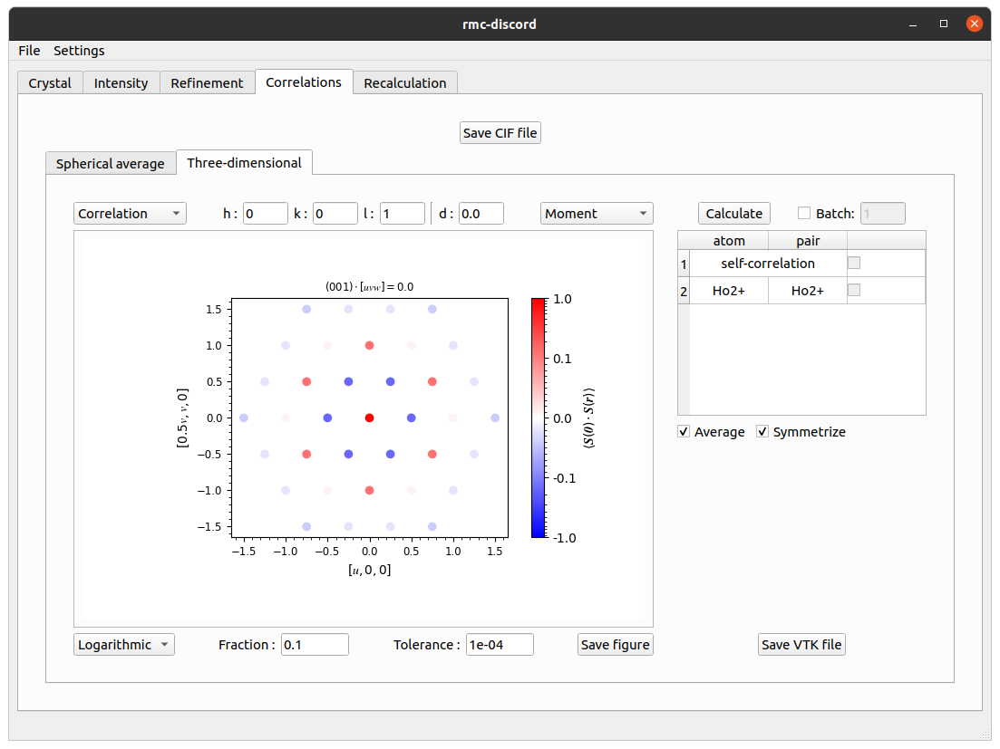

Kagome – magnetic
The classical Heisenberg kagome antiferromagnet is a simple example of a magnetic system with a geometrically frustrated lattice. Using the forward Monte Carlo method, the Hamiltonian
\[E=-J\sum_{\langle i,j\rangle}\pmb{S}_i\cdot\pmb{S}_j\]
is used to describe the nearest neighbor antiferromagnetic interactions where the interaction strength is less than zero (\(J<0\)). The spin vectors \(\pmb{S}\) of the \(\mathrm{Ho^{3+}}\) ions are free to be oriented in any direction.

Example of kagome lattice with magnetic disorder
The spin-pair correlations of an \(8\times8\times8\) supercell are obtained from a forward Monte Carlo simulation. The first nearest neighbors are clearly antiferromagnetic while the second and third are ferromagnetic with the second being more strongly correlated than the third.

Spin-pair correlations
The diffuse scattering intensity is calculated over a range of -6 to 6 in each \(h\)-, \(k\)-, and \(l\)-direction with a bin size of 0.04 in each dimension. Averaging is done over 20 independent forward Monte Carlo simulations to improve the statistics.

Diffuse scattering intensity
RMC refinement
Setup, run, and analyze a refinement with magnetic disorder.
Crystal tab
Create a supercell for magnetic refinement.
- Click on Load CIF file, navigate to the
tutorials/kagome/directory, and locate thekagome.ciffile. - Change the refinement from Neutron nonmagnetic to Neutron magnetic.
- Create a supercell with size \(N_1=8\), \(N_2=8\), and \(N_3=8\).
- Change the atom to a \(\mathrm{Ho3+}\) ion.

Crystal tab
Intensity tab
Preprocess intensity obtained from forward Monte Carlo.
- Download the
kagome-magnetic.nxsfile. - Click on Load NeXus file and locate the
kagome-magnetic.nxsfile. - Under the Rebin tab, change the step size to 0.2 in each \(h\)-, \(k\)-, and \(l\)-direction.
- Under the Crop tab, change the \(h\)-, \(k\)-, and \(l\)-range from 0 to 6.

Intensity tab
Refinement tab
Perform the refinement.
- Change the number of RMC Cycles to 100.
- Change the filter size to 1.0 pixel in each \(h\)-, \(k\)-, and \(l\)-direction.
- Change the temperature prefactor to 1.00e+01 and decay constant to 1.00e-04.
- Click on run and save refinement file.

Refinement tab
Correlations tab
Calculate three-dimensional spin-pair correlations.
- Under the Three-dimensional tab, change Fraction to 0.1 and Tolerance to 1e-3.
- Click Calculate.
- Change Linear scaling to Logarithmic.

Correlations tab
Recalculation tab
Recalculate the intensity over the initial reciprocal space volume.
- In the table, change $h$, $k$ and $l$ filter size to 3.0.
- Change the Laue symmetry to cif which is inferred from the loaded
kagome.ciffile. - Click Calculate.

Recalculation tab
- Navigate to File->Save to save all results into the refinement file.